Anglais professionnel : Petite enfance
CAP Accompagnant éducatif petite enfance (AEPE). Seize mots anglais du métier, outils, objets et gestes de tous les jours. Ressource en libre accès.
Quatre étapes : du français à l'anglais, écouter et choisir, associer, compléter une phrase au travail. Le bouton « Écouter » lit le mot en anglais britannique.
Liste de vocabulaire
| Image | Français | English | Audio |
|---|---|---|---|
| le bébé | baby | ||
| la couche | nappy | ||
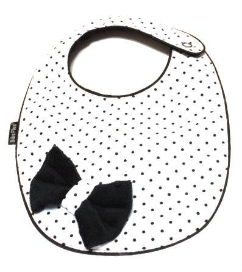 | le bavoir | bib | |
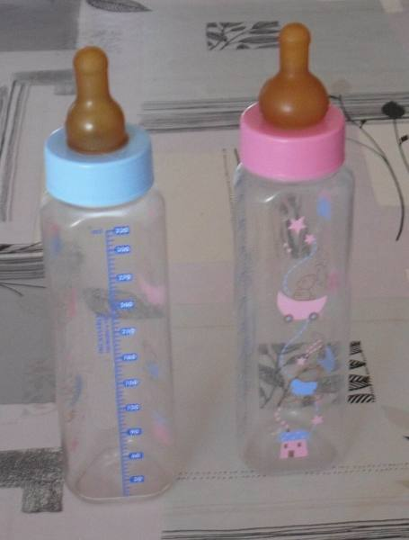 | le biberon | baby bottle | |
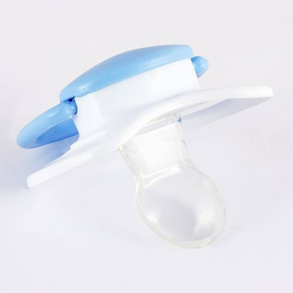 | la tétine | dummy | |
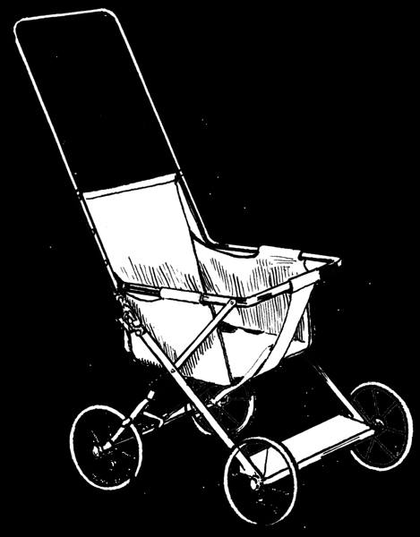 | la poussette | pushchair | |
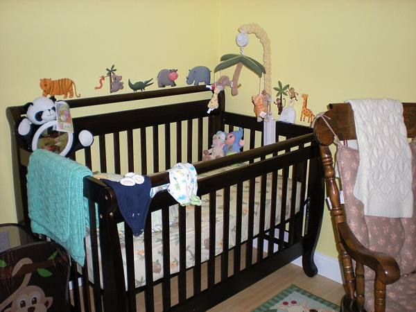 | le lit à barreaux | cot | |
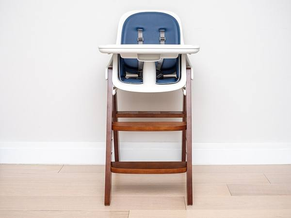 | la chaise haute | high chair | |
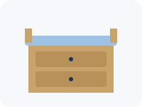 | la table à langer | changing table | |
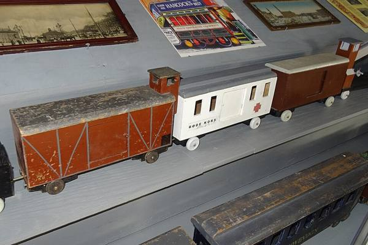 | le jouet | toy | |
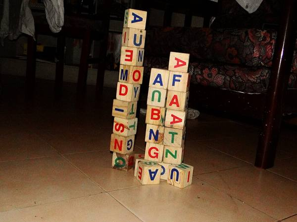 | les cubes | building blocks | |
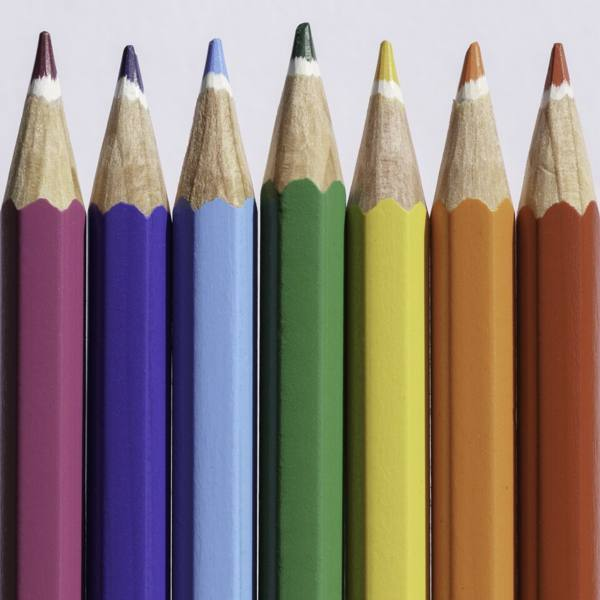 | les crayons de couleur | colouring pencils | |
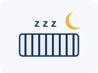 | la sieste | nap | |
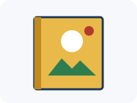 | l'album illustré | picture book | |
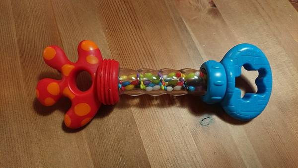 | le hochet | rattle | |
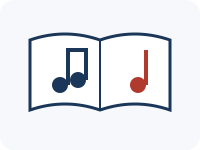 | la comptine | nursery rhyme |
Corrigé pour le professeur : phrases au travail
- Put a ________ on the baby before lunch. (bib)
- Warm the milk in the ________. (baby bottle)
- Sit the child in the ________ to eat. (high chair)
- After lunch, the children have a ________. (nap)
- Let us sing a ________ together. (nursery rhyme)
- We go to the park with the ________. (pushchair)
Dans les étapes 1, 2 et 3, la bonne réponse correspond à la ligne de la liste de vocabulaire.
Crédits des images
Photos sous licence libre, issues de Wikimedia Commons, redimensionnées pour le téléphone. Dessins originaux pour les gestes et les notions.
- le bébé (baby) : dessin original, Itinéraires et destinations, CC BY-NC-SA 4.0.
- la couche (nappy) : dessin original, Itinéraires et destinations, CC BY-NC-SA 4.0.
- le bavoir (bib) : photo de Sfsaf123, licence CC BY-SA 4.0, page du fichier sur Wikimedia Commons.
- le biberon (baby bottle) : photo de Jjackoti, licence CC BY-SA 3.0, page du fichier sur Wikimedia Commons.
- la tétine (dummy) : photo de Crisco 1492, licence CC BY-SA 4.0, page du fichier sur Wikimedia Commons.
- la poussette (pushchair) : photo de Pearson Scott Foresman, licence Public domain, page du fichier sur Wikimedia Commons.
- le lit à barreaux (cot) : photo de קרלוס הגדול, licence CC BY-SA 3.0, page du fichier sur Wikimedia Commons.
- la chaise haute (high chair) : photo de ajay_suresh, licence CC BY 2.0, page du fichier sur Wikimedia Commons.
- la table à langer (changing table) : dessin original, Itinéraires et destinations, CC BY-NC-SA 4.0.
- le jouet (toy) : photo de Leif Jørgensen, licence CC BY-SA 4.0, page du fichier sur Wikimedia Commons.
- les cubes (building blocks) : photo de Bobjgalindo, licence CC BY 4.0, page du fichier sur Wikimedia Commons.
- les crayons de couleur (colouring pencils) : photo de Colin, licence CC BY-SA 4.0, page du fichier sur Wikimedia Commons.
- la sieste (nap) : dessin original, Itinéraires et destinations, CC BY-NC-SA 4.0.
- l'album illustré (picture book) : dessin original, Itinéraires et destinations, CC BY-NC-SA 4.0.
- le hochet (rattle) : photo de Zeromonk, licence CC BY-SA 4.0, page du fichier sur Wikimedia Commons.
- la comptine (nursery rhyme) : dessin original, Itinéraires et destinations, CC BY-NC-SA 4.0.
Fiche de vocabulaire à imprimer
Gros caractères (16 points minimum), en trois formats :